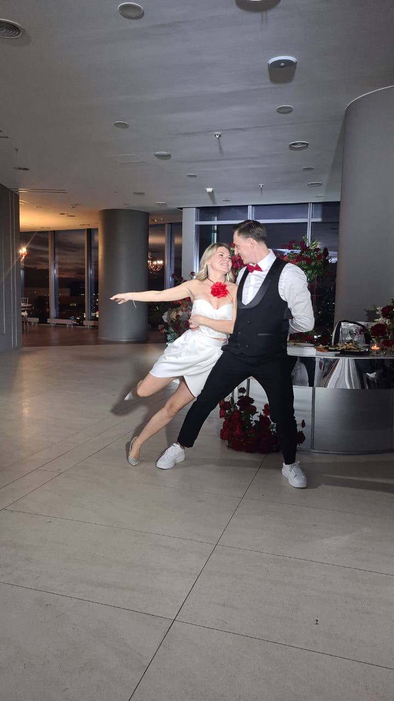
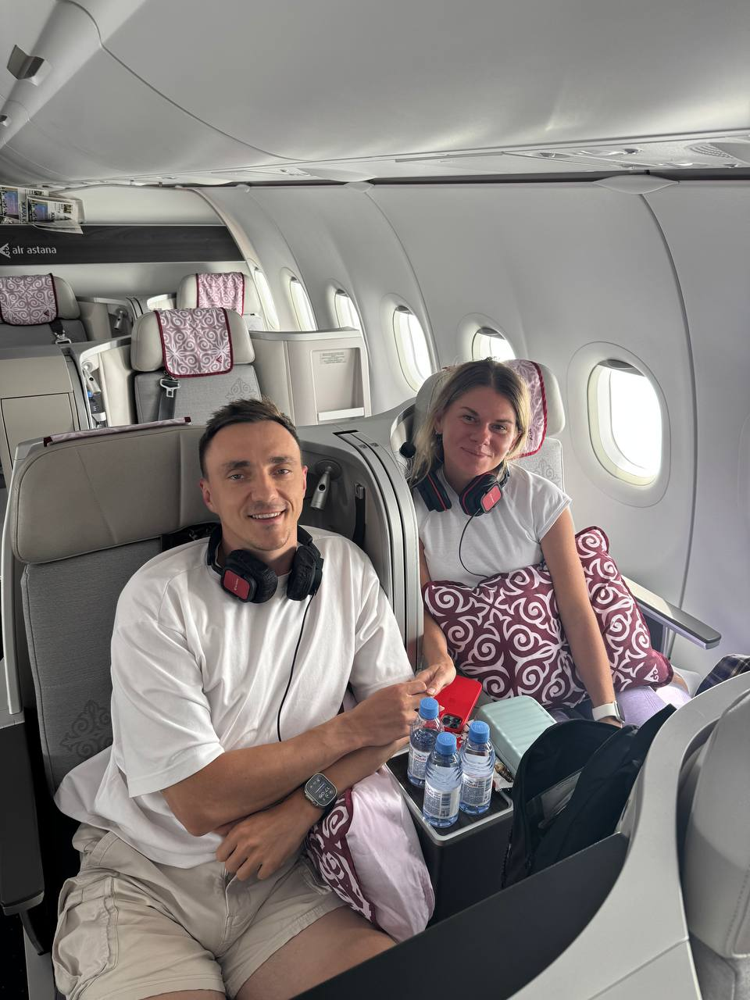

для самых близких ✦ май 2026
it's me —
Жена, мама, путешественница. Сейчас — счастливая декретница, и это самая любимая профессия из всех, что были.
какая она
Каждое слово — не комплимент ради комплимента. У каждого — конкретный человек, который про неё это говорит.
мама
В декабре 2025 года в семье появился сын Роман. С этого момента у Александры — новая работа, и она в неё влюблена так же, как Рома в маму.
Из всех профессий, которые она пробовала, эта — самая любимая. И самая важная.
«Мама — это не отпуск от работы, это работа, ради которой стоило научиться всему остальному.»

жена
Антон и Саша вместе с 2017 года. В 2023 — поженились, и с тех пор у Антона есть единственный аргумент против любого «у тебя всё получится»: «у меня уже получилось — она здесь.»
Семья, которая держится не на «надо» — на том, что без неё теряет смысл всё остальное.
путешественница
Полгода жила в Таиланде и на Бали — пока кто-то спорил с холодом за окном. Это, кстати, типичное поведение.

маршрут
подружки
Девочка-девочка. Без иронии и без снисходительности. Без той уставшей стервозности, которая заводится у некоторых женщин с возрастом.
Просто человек, рядом с которым хочется быть собой — и непременно лучше, чем вчера.
«Если женщина после 30 — это сила, то Саша — это сила и нежность одновременно.»